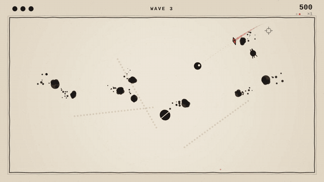
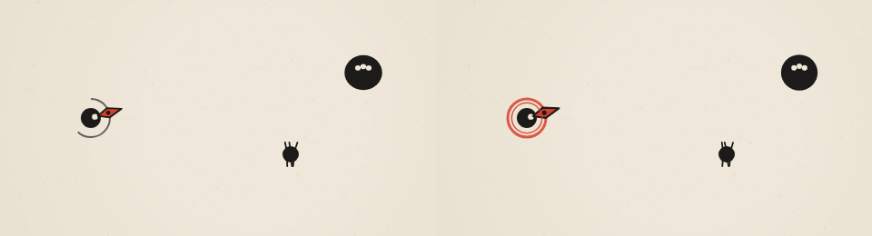

recall
One blade. It always comes back.
A small browser arcade game. You have one throwing blade: throw it, call it back early, and catch it. Catching a blade that hit something raises your multiplier; catching it empty while enemies are on the board drops it. Every kill leaves ink on the floor, so each run ends as a painting you can save. Plain JavaScript on a 2D canvas, no engine and no asset files; every sound is synthesized in the browser.
Play it in the browser on itch.io or on GitHub Pages, or run it locally and verify the task pack:
npm start · npm test · npm run tasks
Walkthrough



Task pack
Six tasks in the shape used to evaluate AI agents on game development. Each has a brief written as it would arrive, acceptance criteria (input sequence, expected visual outcome, verifiable game state), a reference solution with root-cause notes, and an automated check that runs the real game in headless Chromium. A verifier proves every check fails on the starting state and passes on the solution.
The blade only cuts once
Bug · player report
Hit tracking isn't reset when the blade turns home, so the return leg passes through enemies without hitting them. Invisible against one-hit enemies; obvious on a brute's pips.
Wave clears with enemies alive
Bug · QA ticket
A refactor moved the wave-clear check before queued spawns merge, so killing a splitter last clears the wave while its two children are still chasing you.
Darters are undodgeable
Bug · design review
A "helpful" line re-aims the darter every frame of its wind-up, so the telegraph follows the player and the lunge ignores it.
Throws get eaten after a hit
Bug · player report
The input buffer is cleared every frame, so presses made during hitstop (when the simulation is frozen) are lost. Only reproducible right after hits.
Bank shots
Feature · design spec
Kills after a wall bounce score double with their own feedback. Touches the blade, scoring and the popup system.
Charged throw
Feature · producer request
Hold to charge: twice the distance, no brute slowdown, slower movement while charging. Touches input, the blade, player movement, UI and audio, and moves the throw from press to release without changing a tap.
Verified proof
18 unit tests (blade homing at 30, 60 and 144 fps, wave budgets, swept collision, seeded RNG). All six task checks fail on their starting state and pass on their reference solution. Scripted headless play-throughs reach wave 7 with every enemy type on screen and no console errors.
How the checks see the game
Loading the game with ?harness freezes its clock and exposes a test API: place the player, spawn enemies, script movement, aim and button holds, and step frames at a fixed 1/60 s. Checks drive the same input layer a player does and get the same answer every run.
Honest limits
No touch controls or rebinding yet. Tested in Chromium; Firefox and Safari use only standard canvas and WebAudio APIs but haven't been verified. Built without an engine.